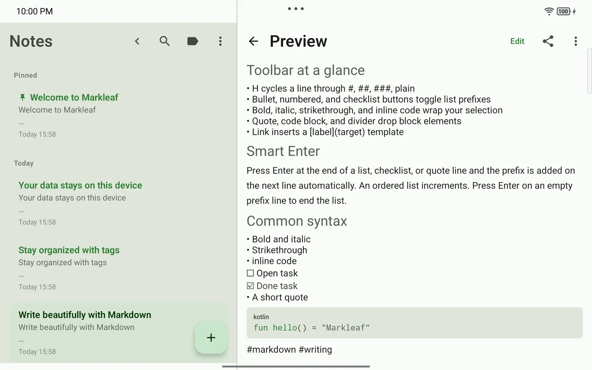

Current release
v2.28.2 Includes Quiet Formatting01 · Write
Syntax comes alive, and tools appear only when needed.
Your Markdown source stays intact while headings and emphasis render legibly as you edit. A small Aa button, selection-context actions, and the / command at the start of a line add formatting without cluttering the screen.
- Live Markdown with CommonMark/GFM preview
- 13 formatting actions and hardware-keyboard shortcuts
- Quick Insert for tables, callouts, and wikilinks
